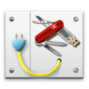
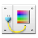
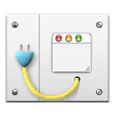

|
このコンポーネントはデザインモードにパレットをインストールします。互換のあるコンポーネントがインストールされると、このパレットにツールが追加されていきます。 |
| 1. | データベースのストラクチャファイル (".4db") と同階層に "Components" フォルダを作成します。 |
| 2. | "4DPop.4dbase" フォルダまたはこのフォルダのエイリアスを "Components"フォルダ に置きます。. |
| 3. | データベースを開きます。 |
| 4. | "On Statup"データベースメソッドに "Install 4DPop" とタイプし、Tabキーを押すと、4DPopパレットをロードする以下のメソッドが挿入されます。
|
| 5. | データベースを再起動すると、デザインモードでスクリーンの左下にパレットが表示されます。 |
*Macintoshでは拡張子 "4dbase" のコンポーネントはパッケージです。
ヘルプメニュー、あるいはパレットの "i" アイコンをクリックして、4DPopのヘルプを表示させることができます。
パレットはデザインモードで、スクリーンの左下に表示されます。パレットが閉じられている場合、ハンドルをドラッグすると開くことができます。

パレットが閉じられているときにハンドルをダブルクリックすると、パレットが開かれ、インストールされている4DPopコンポーネントに従ってサイズが調整されます。開かれたパレットのハンドルをダブルクリックすると、パレットは閉じられます。
互換のあるコンポーネントがインストールされていない場合、開かれたパレットには以下の画像が表示されます:

コンポーネントがインストールされていると、対応するボタンが表示されます。
タイトルバーをクリックしてパレットを移動し、スクリーンの左または右に配置できます。パレットの位置は記憶されます。
パレットのタイトルバーにはコンテキストメニューが割り当てられています。ここからツールを選択したり、パレットに関するいくつかの機能にアクセスできます。
コンポーネントはアルファベット順に並べられます。コンポーネントの並び順を指定するためには、ファイルに "01" を追加するなどします。
互換* コンポーネントをデータベースの "Components" フォルダに1つ以上配置し、データベースを再起動すると、パレット内でこれらの新しいツールがアクセスできるようになります。
利用可能なコンポーネント:
 4DPop Bookmarks 4DPop Bookmarks |
毎日使用するブックマークを管理: URL, ファイル, フォルダ, 電子メール... お気に入りのリストをドラッグ＆ドロップで管理できます。 |
 4DPop Constants Editor 4DPop Constants Editor |
カスタマイズされた定数を専用のエディタで作成、利用できます。作成した定数は即座に4Dメソッドで利用可能です。 |
 4DPop Image buddy 4DPop Image buddy |
アプリケーションのResourcesフォルダ内のすべての画像を管理しましょう。画像を簡単に選択、複製、変換して、プレビューしたり、フォームやアプリケーションにドロップしたり、PICTやcicnリソースをPNG画像に変換したりできます。 |
 4DPop Migration |
アプリケーションのショートカットを保持したり、古い4DK#を4D v11 SQL定数に変換したり、マクロを変換したりできます。これにより4D v11 SQlの移行がスムーズに行えます。 |
4DPop Commands |
すばやく4Dコマンドのドキュメントにアクセスし、ドラッグ＆ドロップでコマンド(そして、それらのパラメタ!)をメソッドエディタに挿入します。 |
 4DPop Rulers 4DPop Rulers |
あなたのワークスペースに縦横のルーラを配置し、必要なガイドを作成してください。環境設定を変えることなく、エンドユーザのスクリーンで視覚化できます。 |
 4DPop Color Chart |
複数のカラーパレット (RGB, HSL, 等) を使用して精密に背景色と前景色を選択し、メソッドへのドラッグ＆ドロップによりソースコードを生成できます。 |
 4DPop sqlSchemas 4DPop sqlSchemas |
外部から (ODBC, SQLパススルー, 4D for Flex, 等) のSQL接続で使用するSQLスキーマをグラフィカルに定義します。スキーマはOn sql authenticateデータベースメソッドを定義する際に適用されます。 |
 4DPop Window |
階層メニューを通して複数の開いているウィンドウをを制御できます。一度に開発モードおよびアプリケーションモードのウィンドウを表示し、ウィンドウを再構成して、依存関係 (フォーム上のメソッドオブジェクト依存関係など) を管理できます。画面解像度の変更により見失ってしまったウィンドウを再表示できます。 |
 4DPop XLIFF 4DPop XLIFF |
4DでXLIFFリソースを編集し、アプリケーションをローカライズエディタとして使用できます。簡単にSTR#やTEXTリソースを移行できます。 |
* 4DPop のヘルプで、互換コンポーネントの作成方法を参照することができます。
このコンポーネントはコンパイル版で提供されますが、コンポーネントフォルダ内の"Sources" フォルダにはソースコードが含まれています。
4D Pop もご参照ください: http://forums.4d.fr/